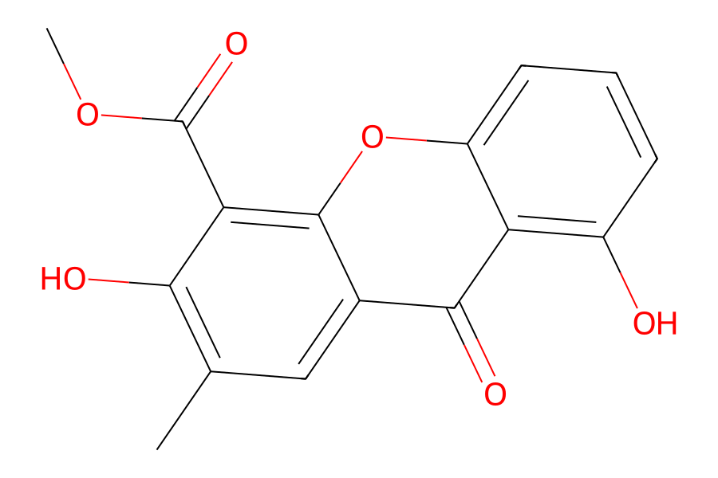
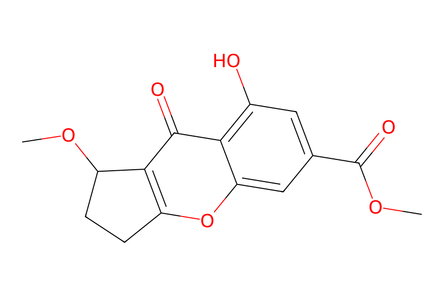
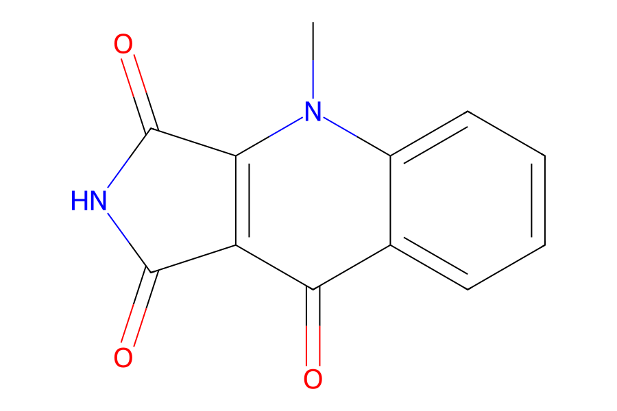

Penicillium sp. SCSIO Ind16F01
- Collection location
- Indian Ocean
- Substrate
- deep-sea sediment
- Reported coordinates
- 10.00371667, 88.72803333
DOI 10.3390/molecules22121999 ↗ · PubMed 29215585 ↗
pp1–5 Figure1; SI PDF4 TableS1
Recorded organism, strain, collection context and compound-linked source evidence.
A source profile groups recorded name variants. Primary-source review, strain identification and sequence verification are separate evidence decisions.
Stored source-identification information. Accessions are reported identifiers, not an independent sequence or taxonomic verification.
| Sequence marker | Reported GenBank accession | Identification method | Source evidence |
|---|---|---|---|
| Not recorded | MF945609 ↗ | Not recordedIdentification context
| Source record: primary source checked DOI 10.3390/molecules22121999 ↗ · PubMed 29215585 ↗Fungal Material Source record → |
Compound activities are not automatically attributable to this strain, sample or source publication.
| Structure | Compound | Formula | MW (g/mol) | Reported source depth | Classification | Activity records | Admitted evidence rows |
|---|---|---|---|---|---|---|---|
 Structure image unavailable | 3,8-Dihydroxy-2-methyl-9-oxoxanthene-4-carboxylic acid methyl esterConnections → | C16H12O6 | 300.266 g/mol | Polyketide | 0 | 0 | |
 Structure image unavailable Structure image unavailable | 7,8-Dihydroxy-6-methyl-9-oxo-9H-xanthene-1-carboxylic acid methyl esterConnections → | C16H12O6 | 300.266 g/mol | Polyketide | 0 | 0 | |
 Structure image unavailable Structure image unavailable | CitreoroseinConnections → | C15H10O6 | 286.239 g/mol | Polyketide | 9 | 4 | |
 Structure image unavailable Structure image unavailable | Citrinolactone BConnections → | C13H12O4 | 232.235 g/mol | Polyketide | 0 | 0 | |
 Structure image unavailable Structure image unavailable | Coniochaetone BConnections → | C13H12O4 | 232.235 g/mol | Polyketide | 5 | 0 | |
 Structure image unavailable | Coniochaetone JConnections → | C15H14O6 | 290.271 g/mol | Polyketide | 1 | 0 | |
 Structure image unavailable Structure image unavailable | Methyl 8-hydroxy-6-methyl-9-oxo-9H-xanthene-1-carboxylateConnections → | C16H12O5 | 284.267 g/mol | Polyketide | 5 | 0 | |
 Structure image unavailable | QuinolonimideConnections → | C12H8N2O3 | 228.207 g/mol | Alkaloid | 0 | 0 |
Up to two results per compound are shown. Open the compound record for all results, conditions and restrictions.
Shared cited references are prioritized where available. A shared reference does not establish a strain-specific assay or the same experimental sample.
| Product | Recorded results | Result evidence |
|---|---|---|
| 3,8-Dihydroxy-2-methyl-9-oxoxanthene-4-carboxylic acid methyl ester | No activity result recorded | No activity evidence recorded |
| 7,8-Dihydroxy-6-methyl-9-oxo-9H-xanthene-1-carboxylic acid methyl ester | No activity result recorded | No activity evidence recorded |
| Citreorosein | K562 screening outcome; IC50 ND · SI TableS1：30 μM时原报百分数113.21%；IC50栏ND。细胞列虽标Inhibition，方向与正文不一致，暂不解释为抑制率/存活率，不纳入效力分析；测试浓度 30 μM Evidence review pending Shared cited reference; experimental attribution unconfirmed MCF-7 screening outcome; IC50 ND · SI TableS1：30 μM时原报百分数109.8%；IC50栏ND。细胞列虽标Inhibition，方向与正文不一致，暂不解释为抑制率/存活率，不纳入效力分析；测试浓度 30 μM Evidence review pending Shared cited reference; experimental attribution unconfirmed | |
| Citrinolactone B | No activity result recorded | No activity evidence recorded |
| Coniochaetone B | K562 screening outcome; IC50 ND · SI TableS1：30 μM时原报百分数95.37%；IC50栏ND。细胞列虽标Inhibition，方向与正文不一致，暂不解释为抑制率/存活率，不纳入效力分析；测试浓度 30 μM Evidence review pending Shared cited reference; experimental attribution unconfirmed MCF-7 screening outcome; IC50 ND · SI TableS1：30 μM时原报百分数104.47%；IC50栏ND。细胞列虽标Inhibition，方向与正文不一致，暂不解释为抑制率/存活率，不纳入效力分析；测试浓度 30 μM Evidence review pending Shared cited reference; experimental attribution unconfirmed | |
| Coniochaetone J | EV71 IC50 =81.6 µM Evidence review pending Shared cited reference; experimental attribution unconfirmed | |
| Methyl 8-hydroxy-6-methyl-9-oxo-9H-xanthene-1-carboxylate | K562 screening outcome; IC50 ND · SI TableS1：30 μM时原报百分数107.53%；IC50栏ND。细胞列虽标Inhibition，方向与正文不一致，暂不解释为抑制率/存活率，不纳入效力分析；测试浓度 30 μM Evidence review pending Shared cited reference; experimental attribution unconfirmed MCF-7 screening outcome; IC50 ND · SI TableS1：30 μM时原报百分数101.59%；IC50栏ND。细胞列虽标Inhibition，方向与正文不一致，暂不解释为抑制率/存活率，不纳入效力分析；测试浓度 30 μM Evidence review pending Shared cited reference; experimental attribution unconfirmed | |
| Quinolonimide | No activity result recorded | No activity evidence recorded |
Repeated source records are grouped with their associated compounds.
Associated compounds: Citreorosein, Methyl 8-hydroxy-6-methyl-9-oxo-9H-xanthene-1-carboxylate, Coniochaetone B
Associated compounds: 3,8-Dihydroxy-2-methyl-9-oxoxanthene-4-carboxylic acid methyl ester
Associated compounds: Coniochaetone J
Associated compounds: 7,8-Dihydroxy-6-methyl-9-oxo-9H-xanthene-1-carboxylic acid methyl ester
Associated compounds: Citrinolactone B
Associated compounds: Quinolonimide